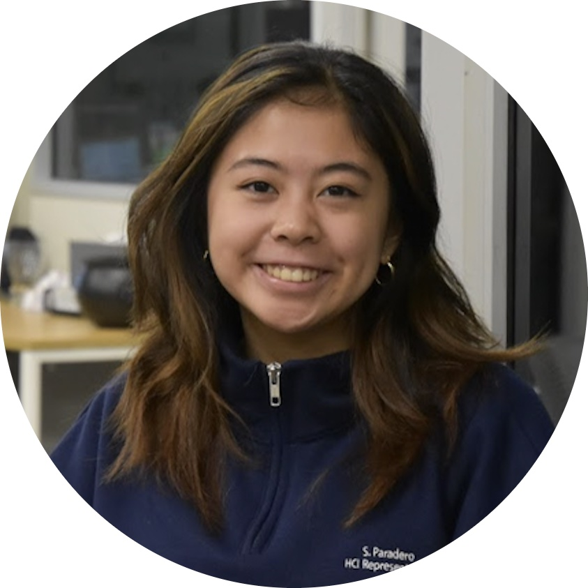

|  |
👋 Hi, I'm Samantha!
|
I'm a current senior at the New Jersey Institute of Technology majoring in human-computer interaction. I am on a personal quest to learn as much as I can about the intersection of humans and technology. I am passionate about applying my technological skills in meaningful ways.
New Jersey Institute of Technology, B.S. in Human-Computer Interaction
Notable Courses: Building Web Applications, Designing the User Experience, Principles of Psychology, Statistical Methods, Database Design Management, Cognitive Processes, Social Networks & Analysis, Requirements Analysis & Systems Design
💫 Skills |
🏆 Achievements |
|
|